Candidate List 20260228 Previous Day Next Day Section 1: New Sources (age<1d) Cosmological Afterglow
Section 2: Old (1-5d) sources observed last night placeholder
Section 1: New Afterglow/FBOT Cands Last Night (1)
1. ZTF26aaiurto (Afterglow?) [Back to Top] [Share] [Trigger Swift] [Fritz ] [Lasair ]RA, Dec: 181.89427, 1.91079 12h 7m34.62s, 1d54m38.84sGalactic (l, b): 278.46209, 62.68007 WARNING: 2.51 deg from ecliptic plane ext(g-r) = 0.027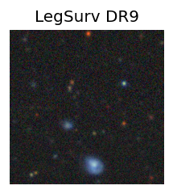 LegacySurvey: 1 sources in 3 arcsec Closest: d = 7.01 arcsec, 51.3 deg (east of north) photoz=0.6 (68% bounds 0.45, 0.86), type=REX peak abs mag = -23.75 (68% bounds -23.0, -24.7) Consistent with synchrotron, g-r>0!
Section 2: Older Sources Observed Last Night (24)
0. ZTF26aahcbch (FBOT?) [Back to Top] [Share] [Trigger Swift] [Fritz ] [Lasair ]RA, Dec: 87.71142, 36.37969 5h50m50.74s, 36d22m46.88sGalactic (l, b): 174.17738, 4.77362 ext(g-r) = 0.671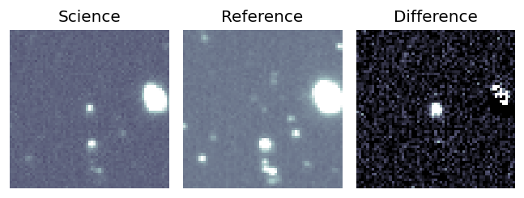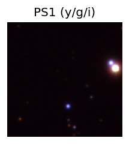 PS1: 1 source in 3 arcsec Closest: d = 0.60 arcsec photoz=1.15+/-0.19 peak abs mag = -28.46
1. ZTF26aahcvha (Afterglow?) [Back to Top] [Share] [Trigger Swift] [Fritz ] [Lasair ]RA, Dec: 251.9872, -2.41064 16h47m56.93s, -2d-24m-38.31sGalactic (l, b): 15.3822, 25.91853 ext(g-r) = 0.218
2. ZTF26aahgbbn (FBOT?) [Back to Top] [Share] [Trigger Swift] [Fritz ] [Lasair ]RA, Dec: 151.32246, 22.39842 10h 5m17.39s, 22d23m54.31sGalactic (l, b): 210.73127, 52.15486 ext(g-r) = 0.044peak abs mag = -21.67 LegacySurvey: 1 sources in 3 arcsec Closest: d = 0.14 arcsec, 187.7 deg (east of north) photoz=0.23 (68% bounds 0.14, 0.29), type=REX peak abs mag = -22.27 (68% bounds -21.1, -22.87)
3. ZTF26aahgjws (FBOT?) [Back to Top] [Share] [Trigger Swift] [Fritz ] [Lasair ]RA, Dec: 125.39845, -6.00956 8h21m35.63s, -6d 0m-34.41sGalactic (l, b): 229.1399, 16.94953 ext(g-r) = 0.052LegacySurvey: 1 sources in 3 arcsec Closest: d = 1.45 arcsec, 255.0 deg (east of north) photoz=0.5 (68% bounds 0.3, 0.9), type=REX peak abs mag = -23.23 (68% bounds -21.92, -24.76) Consistent with synchrotron, g-r>0!
4. ZTF26aahixfn (FBOT?) [Back to Top] [Share] [Trigger Swift] [Fritz ] [Lasair ]RA, Dec: 172.7169, 20.28023 11h30m52.06s, 20d16m48.84sGalactic (l, b): 229.00642, 70.35733 ext(g-r) = 0.023LegacySurvey: 1 sources in 3 arcsec Closest: d = 0.19 arcsec, 226.9 deg (east of north) photoz=0.76 (68% bounds 0.48, 1.05), type=REX peak abs mag = -24.55 (68% bounds -23.32, -25.39) Consistent with synchrotron, g-r>0!
5. ZTF26aahjltp (FBOT?) [Back to Top] [Share] [Trigger Swift] [Fritz ] [Lasair ]RA, Dec: 186.49313, 11.91944 12h25m58.35s, 11d55m9.97sGalactic (l, b): 280.24939, 73.65939 ext(g-r) = 0.028peak abs mag = -22.09 LegacySurvey: 1 sources in 3 arcsec Closest: d = 0.84 arcsec, 71.5 deg (east of north) photoz=0.44 (68% bounds 0.25, 0.6), type=EXP peak abs mag = -21.41 (68% bounds -20.04, -22.25) Consistent with synchrotron, g-r>0!
6. ZTF26aahjslj (Afterglow?) [Back to Top] [Share] [Trigger Swift] [Fritz ] [Lasair ]RA, Dec: 185.38042, 12.51988 12h21m31.30s, 12d31m11.57sGalactic (l, b): 275.84219, 73.79735 ext(g-r) = 0.043LegacySurvey: 1 sources in 3 arcsec Closest: d = 5.99 arcsec, 230.2 deg (east of north) photoz=0.06 (68% bounds 0.05, 0.06), type=SER peak abs mag = -18.49 (68% bounds -18.14, -18.77) Consistent with synchrotron, g-r>0!
7. ZTF26aahjucx (FBOT?) [Back to Top] [Share] [Trigger Swift] [Fritz ] [Lasair ]RA, Dec: 193.85532, 19.22495 12h55m25.28s, 19d13m29.82sGalactic (l, b): 309.74108, 82.04398 ext(g-r) = 0.02peak abs mag = -20.00 LegacySurvey: 1 sources in 3 arcsec Closest: d = 1.05 arcsec, 167.1 deg (east of north) photoz=0.1 (68% bounds 0.08, 0.12), type=SER peak abs mag = -19.64 (68% bounds -19.19, -19.99) Consistent with synchrotron, g-r>0!
8. ZTF26aahjyxl (Afterglow?) [Back to Top] [Share] [Trigger Swift] [Fritz ] [Lasair ]RA, Dec: 217.15759, -0.53109 14h28m37.82s, 0d-31m-51.92sGalactic (l, b): 347.08442, 53.79306 ext(g-r) = 0.044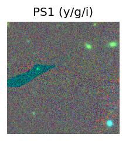 LegacySurvey: 1 sources in 3 arcsec Closest: d = 6.79 arcsec, 352.4 deg (east of north) photoz=1.06 (68% bounds 0.4, 1.84), type=PSF peak abs mag = -24.78 (68% bounds -22.22, -26.26) Consistent with synchrotron, g-r>0!
9. ZTF26aahkghk (FBOT?) [Back to Top] [Share] [Trigger Swift] [Fritz ] [Lasair ]RA, Dec: 267.66736, 51.41165 17h50m40.17s, 51d24m41.92sGalactic (l, b): 78.83144, 30.12493 ext(g-r) = 0.043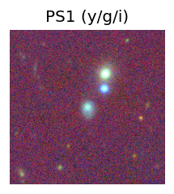 peak abs mag = -20.13 LegacySurvey: 1 sources in 3 arcsec Closest: d = 0.72 arcsec, 165.3 deg (east of north) photoz=0.13 (68% bounds 0.11, 0.15), type=SER peak abs mag = -19.9 (68% bounds -19.45, -20.18)
10. ZTF26aahpkqy (FBOT?) [Back to Top] [Share] [Trigger Swift] [Fritz ] [Lasair ]RA, Dec: 169.76846, 0.87315 11h19m4.43s, 0d52m23.35sGalactic (l, b): 258.91502, 55.64312 WARNING: -3.25 deg from ecliptic plane ext(g-r) = 0.034peak abs mag = -19.42 LegacySurvey: 1 sources in 3 arcsec Closest: d = 1.37 arcsec, 230.4 deg (east of north) photoz=0.12 (68% bounds 0.1, 0.15), type=REX peak abs mag = -20.05 (68% bounds -19.5, -20.57)
11. ZTF26aahpovy (Afterglow?) [Back to Top] [Share] [Trigger Swift] [Fritz ] [Lasair ]RA, Dec: 106.79155, -1.96131 7h 7m9.97s, -1d-57m-40.71sGalactic (l, b): 216.47353, 2.60144 ext(g-r) = 0.44
12. ZTF26aahtrfj (FBOT?) [Back to Top] [Share] [Trigger Swift] [Fritz ] [Lasair ]RA, Dec: 190.34138, 14.84118 12h41m21.93s, 14d50m28.23sGalactic (l, b): 291.62396, 77.49124 ext(g-r) = 0.035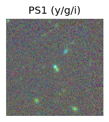 LegacySurvey: 1 sources in 3 arcsec Closest: d = 0.27 arcsec, 196.9 deg (east of north) photoz=0.73 (68% bounds 0.46, 0.81), type=SER peak abs mag = -21.88 (68% bounds -20.68, -22.18)
13. ZTF26aahvwcf (Afterglow?) [Back to Top] [Share] [Trigger Swift] [Fritz ] [Lasair ]RA, Dec: 284.30971, -10.89513 18h57m14.33s, -10d-53m-42.48sGalactic (l, b): 23.85186, -6.2176 ext(g-r) = 0.472
14. ZTF26aaibaza (Afterglow?) [Back to Top] [Share] [Trigger Swift] [Fritz ] [Lasair ]RA, Dec: 167.19962, -6.76905 11h 8m47.91s, -6d-46m-8.58sGalactic (l, b): 262.96414, 47.97735 ext(g-r) = 0.045LegacySurvey: 1 sources in 3 arcsec Closest: d = 2.46 arcsec, 351.8 deg (east of north) photoz=0.04 (68% bounds 0.03, 0.04), type=SER peak abs mag = -17.62 (68% bounds -17.25, -18.08) Consistent with synchrotron, g-r>0!
15. ZTF26aaicwuu (FBOT?) [Back to Top] [Share] [Trigger Swift] [Fritz ] [Lasair ]RA, Dec: 174.77423, 23.75924 11h39m5.82s, 23d45m33.27sGalactic (l, b): 220.57913, 73.34124 ext(g-r) = 0.023peak abs mag = -20.45 LegacySurvey: 1 sources in 3 arcsec Closest: d = 0.28 arcsec, 277.9 deg (east of north) photoz=0.11 (68% bounds 0.06, 0.76), type=REX peak abs mag = -19.16 (68% bounds -17.99, -24.04)
16. ZTF26aaiedvz (FBOT?) [Back to Top] [Share] [Trigger Swift] [Fritz ] [Lasair ]RA, Dec: 242.50115, 0.70575 16h10m0.28s, 0d42m20.70sGalactic (l, b): 12.47068, 35.5842 ext(g-r) = 0.155LegacySurvey: 1 sources in 3 arcsec Closest: d = 2.74 arcsec, 297.0 deg (east of north) photoz=0.06 (68% bounds 0.04, 0.08), type=SER peak abs mag = -20.31 (68% bounds -19.22, -20.78)
17. ZTF26aaiicho (Afterglow?FBOT?) [Back to Top] [Share] [Trigger Swift] [Fritz ] [Lasair ]RA, Dec: 172.11599, 14.2327 11h28m27.84s, 14d13m57.70sGalactic (l, b): 242.46803, 66.75945 ext(g-r) = 0.036peak abs mag = -20.82 LegacySurvey: 1 sources in 3 arcsec Closest: d = 0.56 arcsec, 199.2 deg (east of north) photoz=0.09 (68% bounds 0.06, 0.18), type=SER peak abs mag = -18.49 (68% bounds -17.56, -20.05) Consistent with synchrotron, g-r>0!
18. ZTF26aailxbg (Afterglow?FBOT?) [Back to Top] [Share] [Trigger Swift] [Fritz ] [Lasair ]RA, Dec: 280.81352, -8.79374 18h43m15.25s, -8d-47m-37.47sGalactic (l, b): 24.17406, -2.19553 ext(g-r) = 1.359PS1: 1 source in 3 arcsec Closest: d = 0.08 arcsec photoz=0.60+/-0.01 peak abs mag = -28.86
19. ZTF26aaitkzu (FBOT?) [Back to Top] [Share] [Trigger Swift] [Fritz ] [Lasair ]RA, Dec: 185.74942, 5.57459 12h22m59.86s, 5d34m28.52sGalactic (l, b): 284.2287, 67.40779 ext(g-r) = 0.021peak abs mag = -19.53 LegacySurvey: 1 sources in 3 arcsec Closest: d = 2.35 arcsec, 20.4 deg (east of north) photoz=0.26 (68% bounds 0.22, 0.28), type=SER peak abs mag = -19.42 (68% bounds -19.07, -19.64) Consistent with synchrotron, g-r>0!
20. ZTF26aaitovu (FBOT?) [Back to Top] [Share] [Trigger Swift] [Fritz ] [Lasair ]RA, Dec: 189.15352, 10.44745 12h36m36.84s, 10d26m50.81sGalactic (l, b): 290.40572, 72.95767 ext(g-r) = 0.022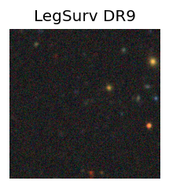 LegacySurvey: 1 sources in 3 arcsec Closest: d = 0.78 arcsec, 305.4 deg (east of north) photoz=0.56 (68% bounds 0.4, 0.76), type=REX peak abs mag = -21.12 (68% bounds -20.27, -21.93) Consistent with synchrotron, g-r>0!
21. ZTF26aaitsza (FBOT?) [Back to Top] [Share] [Trigger Swift] [Fritz ] [Lasair ]RA, Dec: 188.13197, 48.08834 12h32m31.67s, 48d 5m18.03sGalactic (l, b): 131.65629, 68.71832 ext(g-r) = 0.014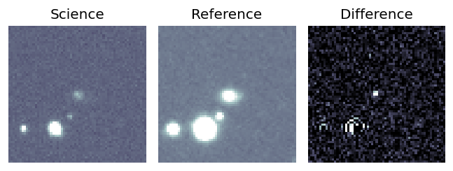peak abs mag = -19.10 LegacySurvey: 1 sources in 3 arcsec Closest: d = 1.83 arcsec, 244.7 deg (east of north) photoz=0.13 (68% bounds 0.1, 0.14), type=SER peak abs mag = -19.53 (68% bounds -19.07, -19.79) Consistent with synchrotron, g-r>0!
22. ZTF26aaiusma (FBOT?) [Back to Top] [Share] [Trigger Swift] [Fritz ] [Lasair ]RA, Dec: 200.90949, 45.33126 13h23m38.28s, 45d19m52.53sGalactic (l, b): 105.60439, 70.69818 ext(g-r) = 0.033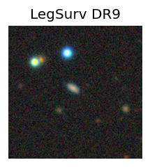 peak abs mag = -19.57 LegacySurvey: 1 sources in 3 arcsec Closest: d = 2.21 arcsec, 31.2 deg (east of north) photoz=0.13 (68% bounds 0.1, 0.16), type=SER peak abs mag = -18.77 (68% bounds -18.24, -19.31) Consistent with synchrotron, g-r>0!
23. ZTF26aaivxqz (Afterglow?) [Back to Top] [Share] [Trigger Swift] [Fritz ] [Lasair ]RA, Dec: 264.49988, -17.82179 17h37m59.97s, -17d-49m-18.43sGalactic (l, b): 8.57135, 7.3147 ext(g-r) = 0.564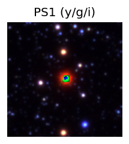 PS1: 1 source in 3 arcsec Closest: d = 0.46 arcsec photoz=0.24+/-0.10 peak abs mag = -25.31 


 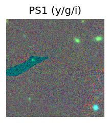
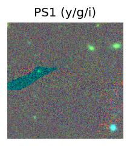
 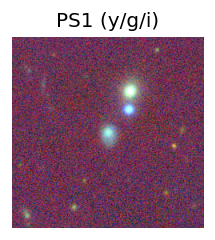
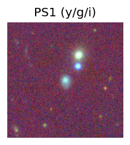


 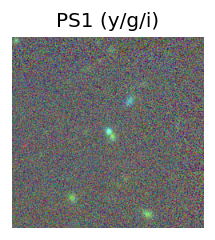
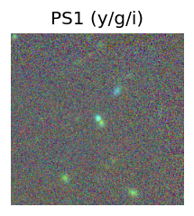


 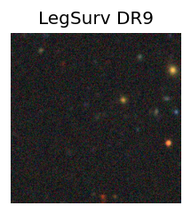
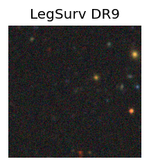


 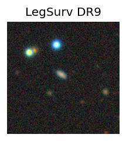
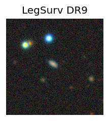 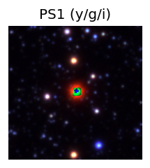
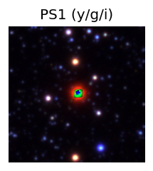